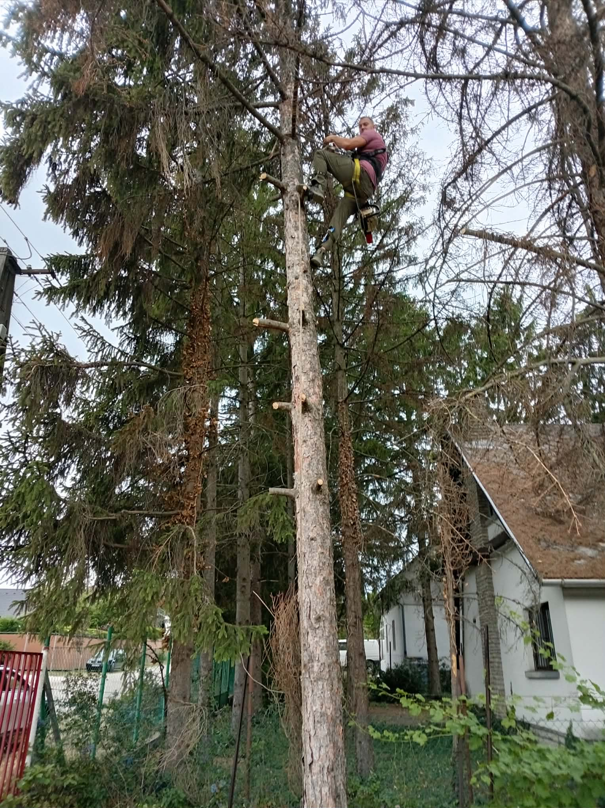
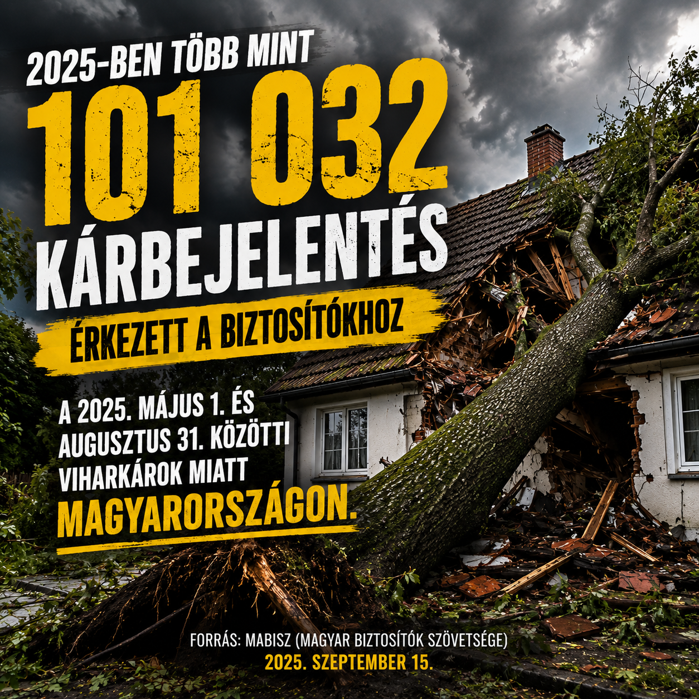

Referenciák
Elvégzett munkáink



Saját munkáink fotói — a valós, munka közbeni képek adják a legerősebb bizonyítékot.

Megdőlt, korhadt vagy épület mellé nőtt fa a telkén? Minél tovább vár, annál nagyobb a kockázat — és annál drágább a kivágás.
Kötéltechnikás és gépi kivágás szűk helyen, tető vagy vezeték mellett is — kár nélkül.
Kertben, telken, út mellett, a tuskó és a hulladék elszállításával.
Elvadult telkek, benőtt kertek, árokpartok teljes megtisztítása.
Egyszeri vagy rendszeres fűnyírás és területkarbantartás.

Saját munkáink fotói — a valós, munka közbeni képek adják a legerősebb bizonyítékot.
Védőfelszerelés és szakszerű technika minden esetben.
A nehéz, körülményes eseteket is megoldjuk.
A fát és a hulladékot elszállítjuk, tisztán adjuk vissza.
Berhidáról, gyors kiszállással a környéken.

Csak 2025 nyarán több mint 101 000 viharkár-bejelentés érkezett a magyar biztosítókhoz — sok esetben egy időben észrevett, veszélyes fa miatt, amit már nem lehetett biztonságosan megelőzni.
Évek óta vágok ki veszélyes fákat kötéltechnikával és géppel, szűk helyen, épület és vezeték mellett is. Nem a legolcsóbb megoldást kínálom, hanem a legbiztonságosabbat — magamnak, a családomnak és minden megrendelőmnek is ezt várnám el.
Hívjon, vagy hagyja meg az adatait — visszahívjuk és időpontot egyeztetünk.
Hamarosan hívjuk. Sürgős esetben: +36 30 286 7714.